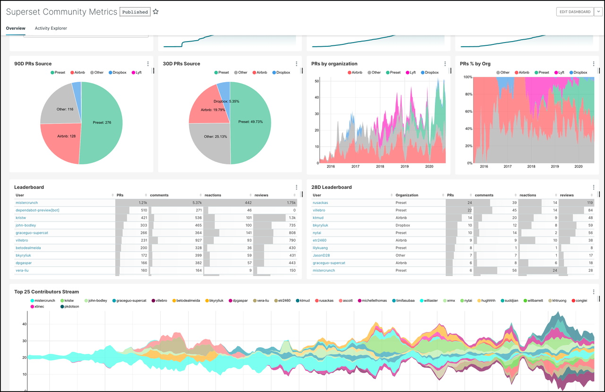
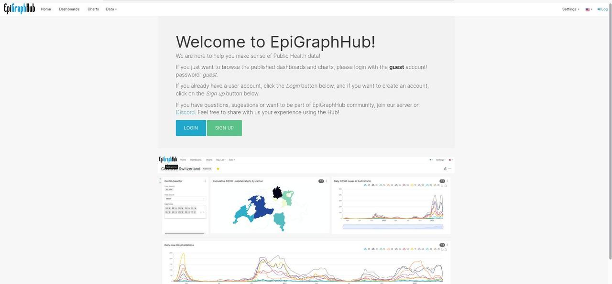

Crea una aplicación web eficiente y atractiva para el manejo, exploración y visualización de datos con Apache Superset

Fuente:Apache Superset
Si eres analista o científico de datos, investigador, trabajas en un equipo de inteligencia de negocios o simplemente estás buscando una plataforma atractiva que te permita explorar y visualizar tus datos de manera rápida y eficiente a gran escala; aquí te presentamos Apache Superset. Conoce con nosotros sus características más importantes, las funcionalidades que ofrece, algunas empresas que lo utilizan y cómo hacer tu primer gráfico y dashboard.
¿Qué es Apache Superset?
Es una plataforma moderna muy utilizada en equipos de inteligencia de negocios. Una aplicación web de código abierto implementada en Python que está en período de incubación en The Apache Software Foundation (ASF) y es patrocinada por Apache Incubator. Cuenta con una interfaz simple y permite al usuario crear y compartir dashboards, explorar, filtrar y organizar datos a gran escala, esto significa que puedes modificar la aplicación según tus necesidades.
Esta iniciativa comenzó en Airbnb en 2015 como un proyecto de hackathon y se unió al programa Apache Incubator en 2017. Para 2021, la Apache Software Foundation anunció que Superset era un proyecto de alto nivel. Puedes encontrar el proyecto alojado en GitHub.
Características y funcionalidades
-
Es intuitivo y rápido.
-
Brinda una amplia variedad de opciones de gráficos y consultas que facilitan la exploración y visualización de datos. Así como la creación de reportes basados en datos.
-
Es utilizado por usuarios de todo tipo de conocimientos. No necesitas ser experto en programación o SQL para usarlo.
-
Permite la creación de dashboards interactivos y gráficos sin escribir código.
-
Es compatible con la mayoría de fuentes de datos basadas en SQL a través de SQLAlchemy, entre ellas: Amazon Redshift, druid, ClickHouse, databricks, MySQL, SQLServer, SQLite, PostgreSQL, entre otras. Puedes consultar esta lista con todas las fuentes de datos que soporta Superset.
-
Ofrece un entorno llamado SQL Lab que permite hacer consultas SQL para la exploración de los datos antes de la representación gráfica.
-
Proporciona un sencillo e intuitivo constructor de vizualizaciones sin código que te permite personalizar tus gráficos.
-
Tiene una arquitectura nativa de la nube. Permite escalar a grandes entornos distribuidos y funciona bien dentro de contenedores. Es flexible y permite elegir el servidor web, motor de base de datos, cola de mensajes, backend de resultados y capa de almacenamiento en caché.
-
Su instalación y configuración es rápida.
-
Permite trabajar con grandes configuraciones de data lake y data warehouse.
-
Brinda un modelo de seguridad con reglas complejas que pueden configurarse de acuerdo a quién puede acceder y a qué características.
-
Tiene la posibilidad de añadir plugins de visualizaciones personalizados.
Hemos visto una gran cantidad de ventajas y funcionalidades que ofrece Superset. Debido a esto, exste una gran variedad de industrias y empresas que utilizan Superset en sus tareas, entre ellas se encuentran: Airbnb, American Express, Netflix, Udemy, Twitter. Puedes consultar una lista más amplia aquí
EpiGraphHub: un ejemplo de Superset
EpiGraphHub es una aplicación web para el manejo y visualización de datos de salud pública.
 Fuente:EpigraphHub Superset
Allí puedes crear una cuenta o ingresar con la cuenta de invitado para la cual el usuario y la contraseña es guest. EpiGrapHub Superset te ofrece una variedad de dashboards referentes, entre otras cosas, a datos de COVID en distintos países y continentes donde se visualizan características importantes en cada caso (sexo, fecha, grupos de edad, número de casos positivos, división política, estado de salud, entre otras). Podemos explorar estos datos a través de sus servidores. A continuación te mostramos un dashboard en el Superset de EpiGraphHub.
 Fuente:EpigraphHub Superset
Fuente:EpigraphHub Superset
Puedes conocer más sobre EpiGrapHub en nuestro artículo: EpiGraphHub: un proyecto de código abierto para el análisis de datos de calidad
Cómo inciar con Superset
A continuación te presentamos algunas formas diferentes de empezar con Superset:
-
Descarga el código fuente del sitio web de The Apache Foundation
-
Descarga la última versión de Superset desde Pypi
-
Configura Superset localmente con un comando usando Docker Compose
-
Descarga el Docker image desde Dockerhub
-
Instala la última versión de Superset desde GitHub
Puedes consultar sobre la instalación y configuración de Superset aquí.
Una introducción a cómo crear tu primer dashboard
Si vas a utilizar Superset para tu flujo de trabajo de análisis y exploración de datos, a continuación te mostramos algunos pasos necesarios que te permitirán crear un gráfico y guardarlo en un dashboard en esta aplicación. Puedes consultar un paso a paso más detallado sobre esto en la documentación oficial de Superset.
- Conectar Superset a una nueva base de datos. Como Superset no puede guardar los datos, debe conectarse a nuestra base de datos existente que soporte SQL. Inicialmente debemos añadir las credenciales de conexión a esa base de datos para poder consultar y visualizar los datos.
Este paso puede obviarse si se utiliza Superset localmente a través de Docker compose. Esto se debe a que está incluida y preconfigurada una base de datos Postgres, llamada examples a nuestra disposición.
Para hacer la conexión, seleccionamos la opción Databases del menú Data y seguimos los pasos para crear y probar la conexión.
-
Registrar una tabla en la base de datos. Ahora seleccionamos las tablas específicas (denominadas datasets en Superset) que deseemos explorar en Superset. Esto lo hacemos seleccionando la opción Data, luego Datasets y nuevo dataset (en la esquina superior derecha). Seleccionamos la base de datos, el esquema, la tabla y añadimos estos cambios.
-
Personalizar las propiedades de las columnas. Se configuran las propiedades de las columnas como: tipo de dato, si la columna es temporal, si debe ser filtrada, si es dimensional, cómo debe tratarla Superset si es una columna de fecha-hora, entre otras. Esto se hace para saber cómo deben tratarse las columnas del dataset al momento de la exploración.
-
Capa semántica de Superset. Esta capa nos ofrece mejoras como analistas, puede almacenar 2 tipos de datos calculados:
-
Métricas virtuales: podemos escribir consultas SQL con funciones de agregación para varias columnas y colocar los resultados como nuevas columnas disponibles para la visualización.
-
Columnas calculadas virtuales: también podemos hacer consultas SQL que involucren cambios en la apariencia o el comportamiento de una columna específica, por ejemplo, cambiar el tipo de dato que almacena. No debemos usar funciones de agregación, como SUM, en las columnas calculadas.
-
Crear gráficos en la vista de exploración. En Superset podemos explorar los datos utilizando dos interfaces:
-
Explore: es un constructor de vizualizaciones sin código. Es tan simple como seleccionar el dataset, el tipo de gráfico que corresponda, lo personalizamos y lo publicamos.
-
SQL Lab: es un IDE (Entorno de Desarrollo Integrado) que nos permite preparar y unir los datos que son tomados en el flujo de trabajo de Explore.
Para crear un gráfico, si estamos en la pestaña Datasets hacemos clic en el nombre del dataset y así inicamos el flujo de trabajo de la vista Explore. Aquí se muestra una vista del dataset con una lista de las columnas y las métricas (en el lado izquierdo). También se observa una vista previa de los datos en la parte inferior. Esta vista contiene las pestañas Data y Customize (datos y personalizar, respectivamente), a partir de allí podemos interactuar cambiando el tipo de visualización, seleccionando distintas métricas para mostrar los datos y personalizando la estética del gráfico. Cabe resaltar que cada vez que hacemos un cambio, debemos ejecutarlo haciendo clic en el botón RUN de la parte superior.
- Guardar un gráfico en un dashboard. Luego de crear el gráfico lo guardamos haciendo clic en el botón Save en la parte superior de la vista. Podemos guardarlo y añadirlo a un dashboard existente o a uno nuevo. Para publicarlo, hacemos clic en Save and goto Dashboard. Podemos cambiar el tamaño del gráfico, haciendo clic en el botón del lápiz en la esquina superior derecha.
Y !Esto es todo! hemos creado un gráfico y lo añadimos a un dashboard en Superset. Existen muchas opciones de configuración y visualización de datasets, es cuestión de que comiences a probar y explorar y te sorprenderás de lo que puedes lograr con esta plataforma.
Otros recursos
-
Consulta el CONTRIBUTING.md del proyecto si estás interesado en contribuir que contiene también una guía detallada sobre cómo configurar un entorno de desarrollo.
Comentarios
Comments powered by Disqus